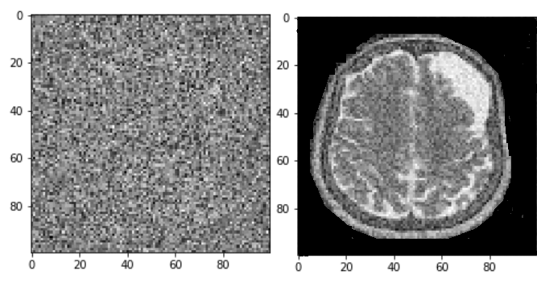

Using CRISPR to Reintroduce an Old Idea Today: Phage Therapy
Creating Custom ERC721 Tokens on the Ethereum Blockchain

Generating New MRI of Brain Tumors with Generative Adversarial Networks
STRs vs SNPs in Recovery of DNA Degradation
This article goes in depth about the challenge of DNA degradation within many fields of science and which sequencing methods have proven to be the most helpful for this problem.
This project uses natural language processing (NLP) to search a diverse database in order to create a new BioBrick. It does this by translating user inputs to parts in the database, then trying to piece together an entirely new part, or composite BioBrick. The goal of this project was to merge the fields of synthetic biology and AI to see if a computer can generate a successful BioBrick part based on user inputs.